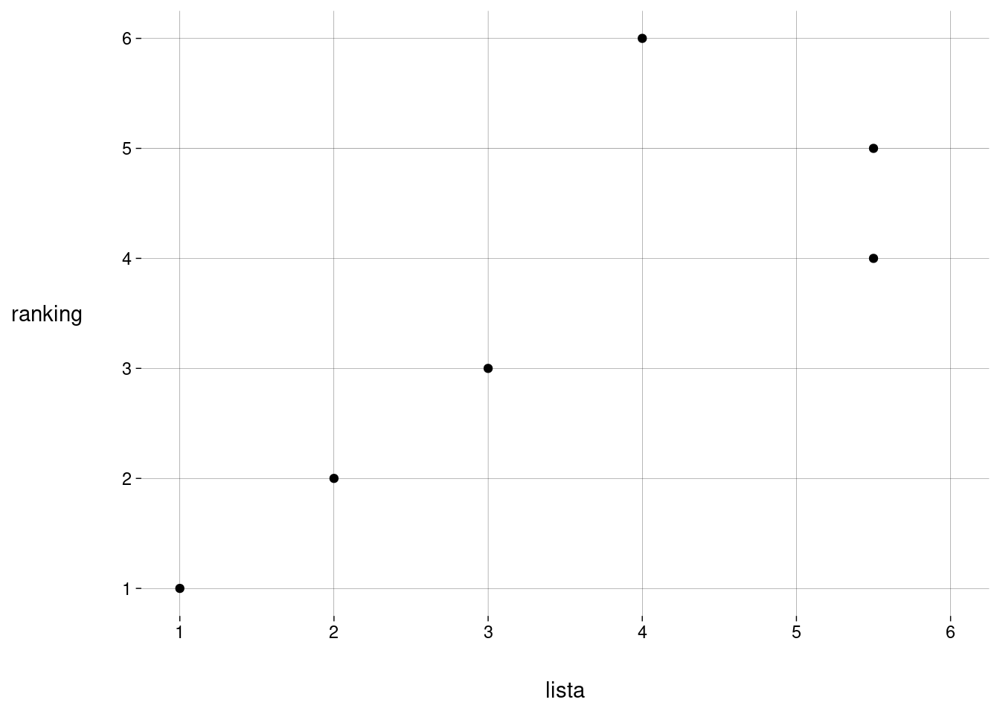

| \(p\) | \(k\) | |||||||||
|---|---|---|---|---|---|---|---|---|---|---|
| 1 | 2 | 3 | 4 | 5 | 6 | 7 | 8 | 9 | 10 | |
| 1 | 1 | |||||||||
| 2 | 1 | 2 | ||||||||
| 3 | 1 | 4 | 6 | |||||||
| 4 | 1 | 6 | 18 | 24 | ||||||
| 5 | 1 | 8 | 36 | 96 | 120 | |||||
| 6 | 1 | 10 | 60 | 240 | 600 | 720 | ||||
| 7 | 1 | 12 | 90 | 480 | 1.800 | 4.320 | 5.040 | |||
| 8 | 1 | 14 | 126 | 840 | 4.200 | 15.120 | 35.280 | 40.320 | ||
| 9 | 1 | 16 | 168 | 1.344 | 8.400 | 40.320 | 141.120 | 322.560 | 362.880 | |
| 10 | 1 | 18 | 216 | 2.016 | 15.120 | 90.720 | 423.360 | 1.451.520 | 3.265.920 | 3.628.800 |
| 11 | 1 | 20 | 270 | 2.880 | 25.200 | 181.440 | 1.058.400 | 4.838.400 | 16.329.600 | 36.288.000 |
| 12 | 1 | 22 | 330 | 3.960 | 39.600 | 332.640 | 2.328.480 | 13.305.600 | 59.875.200 | 199.584.000 |
| 13 | 1 | 24 | 396 | 5.280 | 59.400 | 570.240 | 4.656.960 | 31.933.440 | 179.625.600 | 798.336.000 |
| 14 | 1 | 26 | 468 | 6.864 | 85.800 | 926.640 | 8.648.640 | 69.189.120 | 467.026.560 | 2.594.592.000 |
| 15 | 1 | 28 | 546 | 8.736 | 120.120 | 1.441.440 | 15.135.120 | 138.378.240 | 1.089.728.640 | 7.264.857.600 |
| 16 | 1 | 30 | 630 | 10.920 | 163.800 | 2.162.160 | 25.225.200 | 259.459.200 | 2.335.132.800 | 18.162.144.000 |
| 17 | 1 | 32 | 720 | 13.440 | 218.400 | 3.144.960 | 40.360.320 | 461.260.800 | 4.670.265.600 | 41.513.472.000 |
| 18 | 1 | 34 | 816 | 16.320 | 285.600 | 4.455.360 | 62.375.040 | 784.143.360 | 8.821.612.800 | 88.216.128.000 |
| 19 | 1 | 36 | 918 | 19.584 | 367.200 | 6.168.960 | 93.562.560 | 1.283.143.680 | 15.878.903.040 | 176.432.256.000 |
| 20 | 1 | 38 | 1.026 | 23.256 | 465.120 | 8.372.160 | 136.745.280 | 2.031.644.160 | 27.427.196.160 | 335.221.286.400 |
1 Gerar e visualizar exemplos
1.1 Problema
Condições:
A expert list (lista) tem \(k\) elementos, \(k > 0\), não necessariamente ordenados.
O ranking tem \(p\) elementos, \(p \geq k\), ordenados, sem empates.
Todos os elementos da lista estão no ranking.
O último elemento do ranking é elemento da lista.
Dadas estas condições, desenvolver funções para
Criar exemplos com pares de listas e rankings, cada par em uma tibble.
Construir tabelas coloridas mostrando as posições dos elementos da lista no ranking.
Calcular diferentes medidas de correlação entre lista e ranking.
Construir gráficos.
1.2 Criando exemplos
Quantidade de exemplos
Dados \(k > 0\) e \(p \geq k\) fixos, quantos exemplos existem?
A lista é \(L = \{ a_1, \ldots, a_k \}\).
Para montar um ranking:
-
Escolher um elemento da lista para ser o último do ranking:
\(k\) escolhas.
-
Escolher a ordenação dos \(k - 1\) elementos restantes da lista:
\((k - 1)!\) escolhas.
-
Escolher as posições dos \(k - 1\) elementos restantes da lista dentre as \(p - 1\) posições restantes no ranking:
\(\binom{p - 1}{k - 1}\) escolhas.
Quantidade total de rankings:
\[ k \cdot (k - 1)! \cdot \binom{p - 1}{k - 1} \quad=\quad k! \cdot \binom{p - 1}{k - 1} \]
Atenção
Os cálculos consideram os \(p - k\) elementos do ranking que não estão na lista como indistinguíveis.
Só a presença deles importa, a identidade não.
Veja o exemplo a seguir, onde estes elementos são escritos como “?”.
A lista tem \(k = 2\) elementos, chamados de \(a\) e \(b\).
O ranking tem \(p = 4\) elementos.
-
Os \(6\) rankings possíveis são
- \(?\;?\;a\;b\)
- \(?\;a\;?\;b\)
- \(a\;?\;?\;b\)
- \(?\;?\;b\;a\)
- \(?\;b\;?\;a\)
- \(b\;?\;?\;a\)
Quantidades de rankings:
Criar uma lista com letras maiúsculas
criar_lista(10) [1] "Z" "Y" "L" "W" "S" "N" "O" "F" "G" "Q"Criar um ranking a partir de uma lista
A função vai receber a lista, um vetor com as posições dos elementos da lista no ranking.
O tamanho \(p\) do ranking vai ser o maior valor do vetor de posições (já que o último elemento do ranking precisa ser da lista).
A função retorna um vetor com o ranking, onde os elementos que não estavam na lista são escritos como “?”.
criar_ranking <- function(lista, posicoes) {
p <- max(posicoes)
# Verificar se posicoes contêm só números entre 1 e p, sem repetições
stopifnot(
'Posições precisam estar entre 1 e p, sem repetições.' =
all(between(posicoes, 1, p)) & identical(posicoes, unique(posicoes))
)
ranking <- rep('?', p)
ranking[posicoes] <- lista
ranking
}r <- criar_ranking(
LETTERS[1:4],
c(2, 6, 1, 3)
)
r[1] "C" "A" "D" "?" "?" "B"1.3 Representando um exemplo
Como tibble
Para calcular a correlação entre a lista e o ranking, vamos precisar ordenar a lista de alguma forma, pois, se todos os elementos da lista estiverem empatados (i.e., se todos tiverem o mesmo valor de posição), vamos cair em um caso em que o desvio-padrão é \(0\) (quando o ranking só contiver jogadores da lista).
Dado um ranking, a maneira mais conveniente de ordenar a lista afetando a correlação de forma previsível é concordando com o ranking!
É isto que esta função faz.
Além disso, os elementos que não estavam na lista mas estão no ranking, se existirem, precisam entrar na tibble.
Eles vão entrar todos empatados no fim da lista, como no exemplo mais abaixo.
A função retorna uma tibble com as colunas nome, pos_lista e pos_ranking.
criar_df <- function(ranking) {
p <- length(ranking)
lista <- ranking[ranking != '?']
k <- length(lista)
pos_lista <- 1:k
pos_ranking <- which(ranking %in% lista)
# Linhas com elementos da lista
df <- tibble(
nome = lista,
pos_lista = pos_lista,
pos_ranking = pos_ranking
)
if (p > k) {
# Linhas com outros elementos
nomes <- rep('?', p - k)
pos_lista <- rep((sum((k+1):p) / (p - k)) , p - k)
pos_ranking <- which(!(ranking %in% lista))
df <- df %>%
bind_rows(
tibble(
nome = nomes,
pos_lista = pos_lista,
pos_ranking = pos_ranking
)
)
}
df
}r <- criar_ranking(LETTERS[1:4], c(2, 6, 1, 3))
criar_df(r)Como tabela
Uma maneira mais compacta ainda de representar um exemplo de ranking.
criar_tabela <- function(ranking) {
df <- criar_df(ranking) %>%
select(-pos_lista) %>%
arrange(pos_ranking) %>%
pivot_wider(
names_from = pos_ranking,
values_from = nome
)
df %>%
gt() %>%
tab_style(
cell_fill('red'),
cells_body(
columns = where(~ .x == '?')
)
)
}r <- criar_ranking(LETTERS[1:4], c(2, 6, 1, 3))
criar_tabela(r)| 1 | 2 | 3 | 4 | 5 | 6 |
|---|---|---|---|---|---|
| C | A | D | ? | ? | B |
Aqui, fica claro quais são e em que posições estão os elementos da lista.
Como gráfico
A função recebe um ranking, na forma de vetor ou de tibble.
A função gera um gráfico de pontos, com um ponto para cada elemento.
No eixo \(x\), a posição do elemento na lista.
No eixo \(y\), a posição do elemento no ranking.
A função pode receber, além do ranking, uma função para calcular o score deste ranking (i.e., alguma forma de correlação entre o ranking e a lista). O score vai ser mostrado no título do gráfico.
Opcionalmente, é incluída uma reta de regressão linear via mínimos quadrados.
criar_plot <- function(ranking, fun = NULL, reta = TRUE) {
if (!is_tibble(ranking)) {
ranking <- criar_df(ranking)
}
df <- ranking
p <- nrow(df)
grafico <- df %>%
ggplot(aes(pos_lista, pos_ranking)) +
geom_point() +
scale_x_continuous(breaks = 1:p, labels = 1:p, limits = c(1, p)) +
scale_y_continuous(breaks = 1:p, labels = 1:p, limits = c(1, p)) +
labs(
x = 'lista',
y = 'ranking'
)
if (!is.null(fun)) {
score <- do.call(fun, list(df))
grafico <- grafico + labs(title = paste0('Score = ', score))
}
if (reta) {
grafico <- grafico +
geom_smooth(
formula = y ~ x,
method = 'lm',
se = FALSE
)
}
grafico
}r <- criar_ranking(LETTERS[1:4], c(2, 6, 1, 3))criar_tabela(r)| 1 | 2 | 3 | 4 | 5 | 6 |
|---|---|---|---|---|---|
| C | A | D | ? | ? | B |
criar_plot(r)
criar_plot(r, reta = FALSE)